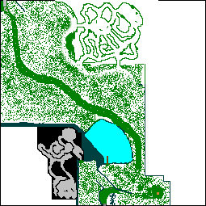

Brannington Forest
A Work in progress check back for updates to map
To Brannington N is 0,0 as usual. Pixel Coord = Aston Coords
Ý

Ý
Gate From Exkordon (Arch Only)
Solid green is a well defined path with rocks where shown, speckled green areas are open woodland with no well defined trail. Blue lines and speckles are impenetrable forest.
■ NPC ■ Jetty ■ Fire
Bear Head Quest
This is given by the Hunter you meet just inside the entrance (137,233) - to locate a Bear head (Looks the same as the black head you get in lab 2). Go to a Bear Cave (entrance at100,198) to the N behind the hunter. Find the large room with coords (80, 230) and you will have found the room with four level 54 Forest bears. One of them will have the bear head you need.
There are two other Bear Caves on the map... Happy Hunting
Amulet Quest
This is given by the Aristocrat you find at (195,231) next to a large fire he wants you to recover an amulet stolen by one of the lake creatures. You can only Enter and Leave the lake at the jetty (133,203), Just walk off the jetty into the water... Argh!! shades of Lab4! underwater again!!! You need potions in the lake to breath which you get in the lake when you kill the lake creatures of which fortunately there are plenty (or is that unfortunately). There are 2 caves with air pockets. The first you need will be in the East corner, there you find a magical stone key.... the second cave (back underwater you go) will be in the South corner. In the second cave you need to use that stone key to open the chest to get the amulet. Those of us who developed a water phobia in Lab4 might want to consider recalling out at this point or you can walk back underwater to jetty and climb out of lake.
Take the amulet back to the Aristocrat.